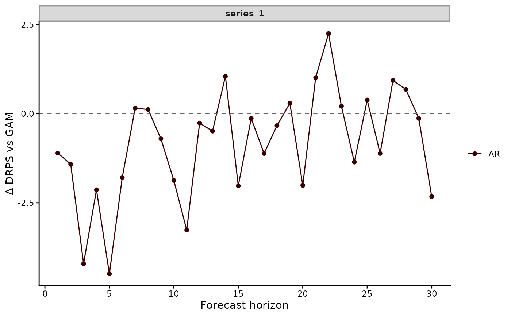

Scores the forecasts of several models of the same
held-out data with one rule, then stacks the results in one table
for comparison. Lower scores are better. The table has one row per
model, series and forecast horizon. A joint score ("energy",
"variogram" or "twenergy") scores all series together. Its
per-series rows hold NA. The rows with series == "all_series"
hold its value.
Usage
compare_scores(..., score = "crps", model_names = NULL, score_args = list())Arguments
- ...
Two or more
mvgam_forecastobjects fromforecast.mvgam(). A named argument, as incompare_scores(GAM = fc1, AR = fc2), names its model. An unnamed one takes the expression passed, such as"fc1".- score
Character name of the scoring rule. The section 'Available scores' of
score.mvgam_forecast()lists them.- model_names
Optional character vector of model names, one per forecast. It replaces the names taken from the call.
- score_args
Optional named list of further arguments of
score.mvgam_forecast(), such asscore_args = list(interval_width = 0.6).
Value
A tibble of class mvgam_compare_scores, with columns:
model: a factor with one level per forecast.series: a factor of series names, with an"all_series"level for a joint score.eval_horizon: the forecast horizon, 1 for the first held-out time.score: the value of the score.in_interval: whether the observation fell in the central interval, asscore.mvgam_forecast()reports it.
Examples
# \dontrun{
set.seed(1)
simdat <- sim_mvgam(family = poisson(), n_series = 1L,
n_timepoints = 120L, trend_model = AR())
# Two models of one count series: a smooth of x with and without
# an AR(1) trend. The trend model samples with smaller steps
# (adapt_delta = 0.95). That avoids divergent transitions when
# lfo_cv() refits it to shorter stretches of the series
mod_gam <- mvgam(y ~ s(x, k = 5), data = simdat$data_train,
family = poisson(), chains = 2, silent = 2)
#> Warning: 209 of 2000 (10.0%) transitions ended with a divergence.
#> See https://mc-stan.org/misc/warnings for details.
mod_ar <- mvgam(y ~ s(x, k = 5), trend_formula = ~ AR(p = 1),
data = simdat$data_train, family = poisson(),
chains = 2, silent = 2,
control = list(adapt_delta = 0.95))
#> Warning: 3 of 2000 (0.0%) transitions ended with a divergence.
#> See https://mc-stan.org/misc/warnings for details.
# }
# \dontrun{
fc_gam <- forecast(mod_gam, newdata = simdat$data_test)
fc_ar <- forecast(mod_ar, newdata = simdat$data_test)
# One row per model and horizon, scored by the discrete ranked
# probability score (lower is better)
scores <- compare_scores(fc_gam, fc_ar, score = "drps",
model_names = c("GAM", "AR"))
summary(scores)
#> # A tibble: 30 × 4
#> series eval_horizon GAM AR
#> <fct> <int> <dbl> <dbl>
#> 1 series_1 1 2.39 1.29
#> 2 series_1 2 2.59 1.18
#> 3 series_1 3 10.5 6.33
#> 4 series_1 4 7.96 5.82
#> 5 series_1 5 8.68 4.19
#> 6 series_1 6 4.07 2.28
#> 7 series_1 7 0.722 0.878
#> 8 series_1 8 0.781 0.900
#> 9 series_1 9 2.73 2.03
#> 10 series_1 10 4.58 2.71
#> # ℹ 20 more rows
# The AR model's DRPS minus the GAM's. Negative values favour the
# AR model
plot(scores, relative = "GAM")

# Next, ensemble() combines the two forecasts
# }